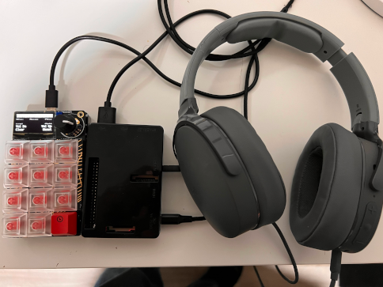

The jukebox üîó
Lately, I’ve been obsessed with the old way of listening to music. You know: from your own collection, in order, one album at a time. No randomness, no infinite playlists, no album of the day, no ads, and no algorithms. When I got my hands on an Adafruit MacroPad RP2040 I knew what I had to do: make my own ugly and overengineered music player. I present to you the “MacroPad Jukebox”.
click to zoom in
With this gizmo, I can play my offline music collection the way I like it. The music collection is loaded onto the Raspberry Pi and arranged in a series of playlists. I use a large sd card for both the OS and the music files, but an external USB drive would also work. As long as the files are accessible to the media player.
The media player is VLC. This media application has an amazing number of features for customization. One of my favorites is the Remote Control interface that allows me to fully control the application via a TCP socket.
The MacroPad RP2040 controls the playback of the music collection by sending commands to a small service in the Raspberry Pi. The rotary encoder controls the selection of the album. The keypad has the usual playback controls: play, pause, stop, etc.
Finally, I can connect the Raspberry Pi audio output to my favorite speaker or headphones. I can even use it in my car!
In this guide, I provide all the code and the instructions to assemble my MacroPad Jukebox. After that, I explain in more detail how all the pieces work.
Bill Of Materials üîó
- Raspberry Pi
- Adafruit MacroPad RP2040
- Data Cable USB C to A
- Power Cable micro USB
- Wired headphones or speaker with 3.5mm cable.
- Micro SD Card
Source Code üîó
The project has two programs: a Go service that runs inside the Raspberry Pi, and the Circuit Python code for the MacroPad.
https://github.com/carlosolmos/macropadjukebox
Wiring üîó
click to zoom in
Assembly and Installation üîó
1. Prepare the Raspberry Pi üîó
Prepare a Raspberry Pi —I used an old model 3B— with the latest version of the Raspberry Pi OS with desktop (11 bullseye) from the official website. Go through the WiFi settings, the updates, and the generic desktop configuration.
VLC üîó
click to zoom in
Make sure VLC is installed. Download a sample mp3 file and test the player using any audio output —speaker or headphones.
pi@raspberrypi:~ $ wget https://download.samplelib.com/mp3/sample-6s.mp3
click to zoom in
Go SDK üîó
I found it easier to build the software inside the RPi to avoid any incompatibilities. Install the golang SDK that is available for the RPi OS via apt packages:
pi@raspberrypi:~ $ sudo apt install golang
It is also possible to build the binary for ARM in another computer and upload it to the RPi.
2. Get the project’s source code. üîó
Clone or download the project’s source code repository from GitHub:
pi@raspberrypi:~ $ git clone https://github.com/carlosolmos/macropadjukebox
3. Prepare the Macropad RP2040 üîó
Prepare the MacroPad RP2040 for CircuitPython programming following this Quickstart guide from Adafruit: https://learn.adafruit.com/adafruit-macropad-rp2040/circuitpython
I used CircuitPython 7.3.3 but newer versions should work.
click to zoom in
MacOS Warning: There seems to be a problem with programming the MacroPad firmware in MacOS Ventura (13.0.1) that I found the hard way. The Finder does not let you move the code files to the device. There is more information in this article. Again, I ended up working directly in the RPi and avoided all this trouble.
Get the MacroPad CircuitPython libraries üîó
Now that the MacroPad is ready for CircuitPython code, we need to load the libraries that this project needs. The libraries are available as a bundle in this URL: https://circuitpython.org/libraries. Download and extract the package for the CircuitPython version that was loaded in the MacroPad.
click to zoom in
click to zoom in
Load the project python code and the CircuitPython libraries üîó
Copy the following libraries from the bundle folder to the /lib folder in the MacroPad drive.
adafruit_bitmap_font
adafruit_debouncer.mpy
adafruit_display_shapes
adafruit_display_text
adafruit_hid
adafruit_macropad.mpy
adafruit_midi
adafruit_pixelbuf.mpy
adafruit_simple_text_display.mpy
adafruit_ticks.mpy
neopixel.mpy
Copy the project python files to the root of the MacroPad drive. Replace any existing files.
macropadjukebox/macropad/code.py
macropadjukebox/macropad/boot.py
The MacroPad drive should contain these files:
click to zoom in
click to zoom in
Power cycle the MacroPad for the new code to load. After booting up, the display should show the playback controls.
click to zoom in
It is possible to inspect the running code in the MacroPad. I recommend using the Mu Editor in CircuitPython mode and its serial console. Push some keys and watch the messages.
click to zoom in
4. Build and install the jukebox service. üîó
Build the Go service üîó
Use the go build command to create the executable for the service:
pi@raspberrypi:~ $ cd macropadjukebox/
pi@raspberrypi:~/macropadjukebox $ go build -o jukebox main.go
click to zoom in
Copy the binary to the home directory —optional, but recommended.
pi@raspberrypi:~/macropadjukebox $ cp jukebox /home/pi
5. Prepare the music collection üîó
In the root folder of the repo, there is a sample configuration file config-example.json. Make a copy in the home directory. Name it config.json.
pi@raspberrypi:~/macropadjukebox $ cp config-example.json /home/pi/config.json
Copy some files from your music collection to the Raspberry Pi —VLC can play just about any audio format. I like to use the /home/pi/Music folder but any other path should be okay.
click to zoom in
Create a separate playlist file {playlist_name}.m3u, with the paths to your songs, for each collection or album you want to load in the Jukebox MacroPad.
click to zoom in
Adjust the config.json file with the playlists you created. Leave the _collections_ entry as 00 —this entry is necessary for the MacroPad code.
click to zoom in
6. Test the Jukebox üîó
Connect the MacroPad to the RPi, and the headphones or speakers.
Start VLC with RC from a terminal
pi@raspberrypi:~ $ vlc --extraintf rc --rc-host localhost:8888
Run the jukebox service from another terminal.
pi@raspberrypi:~ $ ./jukebox
The Playlists should be loaded to the MacroPad. Use the rotary encoder to select an album and push it to play it.
click to zoom in
See the jukebox service log messages to verify the commands received from the MacroPad.
click to zoom in
Now play around with the MacroPad keypad to control the playback: pause, play, volume up, volume down, etc.
If you’ve been using the MU serial console you should see the log messages from the MacroPad.
click to zoom in
7. Prepare the service to start at boot time üîó
The jukebox should start automatically when powered on. Use crontab in the Raspberry Pi to launch the service at boot time.
The project code has a bash script named runboot.sh. I prepared this file to start VLC in headless RC mode, and the jukebox service. I added a few pauses to account for the serial port initialization.
#!/bin/bash
set -x
set -e
sleep 5
cd /home/pi
cvlc --rc-host "localhost:8888" -I rc > /dev/null 2>&1 &
sleep 5
./jukebox > /home/pi/jukebox.log 2>&1 &
Copy the script to the home folder and make sure it is executable.
pi@raspberrypi:~ $ cp macropadjukebox/runboot.sh ./runboot.sh
pi@raspberrypi:~ $ chmod +x runboot.sh
Create an entry in the crontab to execute the script at boot time.
pi@raspberrypi:~ $ crontab -e
@reboot cd /home/pi && ./runboot.sh &
click to zoom in
Rock on! üîó
This is it. Disconnect any monitor, keyboard, and mouse from the RPi. Reboot and test the Jukebox. Wait about 15 seconds for everything to start. I know that is terrible, but practice your patience, or go to the end of this post for a list of possible improvements.
 click to zoom in
So you want to know how all of this works üîó
Here is the long version of how this project works. Please remember this is a scrappy project, so don’t expect efficiency, beautiful code, or clever ideas. The ultimate goal here is to learn new things by tinkering with these devices.
Raspberry Pi and VLC üîó
The Raspberry Pi is the brain of the jukebox. I used an old RPi 3-B since the device requires little processing power. I loaded the latest version of the Raspberry Pi OS with Desktop (bullseye) on the SD card and set up the usual work environment. After completing the project I realized that desktop graphics are not necessary. In the next iteration, I might try the Lite (console-only) version to free up more resources and speed up the start-up.
VLC üîó
click to zoom in
VLC has an amazing amount of features. It supports different user interfaces. Apart from the standard desktop GUI, VLC can be used via a web UI, the console, and a remote control interface. The remote control (RC) interface can be accessed via a TCP socket (with telnet or NC) and it presents a command shell for user interaction. More on that here: https://wiki.videolan.org/Documentation:Advanced_Use_of_VLC/#RC_and_RTCI
The RC interface has to be enabled when launched, for example:
$ vlc --extraintf rc --rc-host localhost:8888
Once VLC is running with RC, we can send commands via a socket or enter into an interactive shell with Telnet.
Example: add a playlist and commence playback automatically:
$ echo "add Music/ElephantGym-Dreams.m3u" | nc -q 1 localhost 8888
click to zoom in
To clear the playlist and stop playback we can use:
$ echo "clear" | nc -q 1 localhost 8888
We don’t need to use the graphical interface at all. We can instead use cvlc for a CLI or headless interface. The flag -I rc makes RC the main interface.
cvlc -I rc --rc-host localhost:8888
click to zoom in
I figured it should be easy to create a service to control VLC from the MacroPad by leveraging the RC interface.
The Jukebox Service, Go üîó
We need a small service to translate the signals coming from the MacroPad serial port into VLC RC commands. We also need a way to send the list of available music to the MacroPad. This service will run inside the Raspberry Pi.
click to zoom in
I decided to use “Go” to build this service solely because I’ve never written a “Go” program that interacts with serial ports and sockets at the same time. The general functionality of the service is:
- Load a configuration file with details about the ports, the VLC host, and more importantly, the music collection.
- Open the serial port that communicates the MacroPad with the Raspberry Pi.
- Send the music collection configuration (playlists) to the MacroPad via the serial port.
- Start an infinite loop reading from the serial port any input from the MacroPad
- Process the MacroPad commands and send them to the VLC player via a single-use TCP socket to the RC interface.
I decided not to keep the socket connection to VLC open because the commands should come only sporadically, and I don’t want to worry about accidental disconnections. Nothing like a stateless protocol!
The configuration file üîó
The configuration file is a JSON document containing the information about the VLC RC interface (host and port), the serial device name where the MacroPad is connected, and the music collection —playlists. The playlists field is a dictionary of unique indexes (I use a numeric sequence) mapped to the playlist name and file path.
{
"vlcHost": "localhost:8888",
"serialPort": "/dev/ttyACM1",
"playlists": {
"00": {
"name": "_collections_"
},
"01": {
"name": "Death Cab For Cutie - Transatlanticism",
"file": "/home/pi/Music/DeathCabForCutie-Transatlanticism.m3u"
},
"02": {
"name": "Metallica - Metallica",
"file": "/home/pi/Music/Metallica-Metallica.m3u"
}
}
}
The first entry in the playlists dictionary is a special entry (00) that helps the MacroPad read and organize the collection.
"00": {
"name": "_collections_"
},
...
The m3u files are simply plain text with a list of song files.
Serial Port programming in Go üîó
I found a few different Go libraries for serial programming. Most of them were very old and abandoned. Finally, I found https://github.com/bugst/go-serial. What I like about this library ‚Äîapart from the fact that is actively developed‚Äî is that I don’t have to worry about the underlying operating system. It also has nice helper functions for operations like listing the available serial ports.
The serial port we intend to use is pre-defined in the configuration file. However, we have to account for the fact that the MacroPad and the Raspberry Pi are separate devices and the serial port might not be ready when the service starts. The service should wait for the port to become available. We can do this in a waiting loop where we list the ports looking for the right name.
found := false
for {
log.Println("list serial ports")
ports, err := serial.GetPortsList()
if err != nil {
log.Fatal(err)
}
if len(ports) == 0 {
log.Fatal("No serial ports found!")
}
for _, portName := range ports {
log.Printf("Port: %v\n", portName)
if portName == sc.config.SerialPort {
found = true
break
}
}
if found {
break
}
time.Sleep(3 * time.Second)
}
Once the port is found, we can open it and set it up for communications. The read timeout has to be disabled because there will be long periods of time without any transmission. Since this is the main function of the program we can afford to lock waiting for something new to transmit.
mode := &serial.Mode{
BaudRate: 9600,
Parity: serial.NoParity,
StopBits: serial.OneStopBit,
DataBits: 8,
}
var err error
sc.port, err = serial.Open(sc.config.SerialPort, mode)
if err != nil {
log.Fatal(err)
}
defer sc.port.Close()
err = sc.port.SetReadTimeout(serial.NoTimeout)
if err != nil {
log.Fatal(err)
}
The first transmission after the port is ready will be to send the information of the music collection -playlists- to the MacroPad. We use a reduced version (without file paths) of the playlist JSON dictionary. Ultimately, the JSON string is written to the serial port as an array of bytes. On the MacroPad side, the code is expecting a return character \r as the End-Of-Line marker.
func (sc *SerialComms) sendData(data []byte) error {
_, err := sc.port.Write([]byte(fmt.Sprintf("%s\r", data)))
if err != nil {
return err
}
return nil
}
Finally, we run on an infinite loop waiting for messages from the serial line. When a new message arrives, it is processed with one of two functions. One function works with the playlist selections (prefixed pl|), and the other function responds to the playback commands (prefix cmd|).
buff := make([]byte, 256)
for {
// Reads bytes
n, err := sc.port.Read(buff)
if err != nil {
//zero tolerance for errors in the serial line.
log.Fatal(err)
}
if n == 0 {
continue
}
input := string(buff[:n])
if strings.LastIndex(strings.ToLower(input), "cmd|") == 0 {
sc.processKeyCommand(input)
} else if strings.LastIndex(strings.ToLower(input), "pl|") == 0 {
sc.processPlaylistSelection(input)
}
}
VLC commands üîó
The VLC RC interface responds to a specific list of command messages. I compiled a list from the cvlc command documentation. The service has a series of helper functions to send the appropriate command strings to the VLC RC interface. Every helper function prepares one or more command strings to be sent to VLC via a single-use TCP socket connection using the method VLCsendCommand.
func VLCsendCommand(cmdList []string, waitForResponse bool) (string, error) {
log.Printf("sending commands %s\n", cmdList)
//return "", nil
vlcsocket, err := net.Dial("tcp", VlcHost)
if err != nil {
log.Println("Connection to socket failed:", err)
return "", err
}
// wait for the VLC prompt to respond.
time.Sleep(1 * time.Second)
// read prompt out of the way
recvBuf := make([]byte, 1024)
n, err := vlcsocket.Read(recvBuf[:])
// send commands
res := ""
for _, cmd := range cmdList {
cmdString := fmt.Sprintf("%s\n", cmd)
_, err = vlcsocket.Write([]byte(cmdString))
if err != nil {
log.Println("Write to socket failed:", err)
return "", err
}
// read command response
if waitForResponse {
err = vlcsocket.SetReadDeadline(time.Now().Add(3 * time.Second))
if err != nil {
log.Println("SetReadDeadline failed:", err)
// do something else, for example create new conn
return "", err
}
// try 3 times
for i := 0; i < 3; i++ {
recvBuf := make([]byte, 1024)
n, err = vlcsocket.Read(recvBuf[:]) // recv data
if err != nil {
if netErr, ok := err.(net.Error); ok && netErr.Timeout() {
//timeout
break
} else {
// some error else, do something else, for example create new conn
log.Println("Read from socket error:", err)
return res, nil
}
}
if n == 0 {
break
}
res = res + string(recvBuf)
}
}
}
// close the connection gracefully
_, err = vlcsocket.Write([]byte("quit\n"))
if err != nil {
return res, err
}
_ = vlcsocket.Close()
return res, nil
}
As I said, two types of messages come from the MacroPad: playlist selection and playback commands. The playback commands are defined by the prefix cmd| and the name of the function to execute.
cmd|play
cmd|stop
cmd|next
We keep a map of these names and their corresponding helper functions in the configuration.go file. For example, the command cmd|play will trigger the function VLC_Play() and the command cmd|clear will do VLC_Clear(). I found this to be a good way to avoid a long if-else-if abomination:
var KeyFunctionsMap = map[string]func(){
"play": func() {
fmt.Println("play")
err := VLC_Play()
if err != nil {
log.Printf("error: %s\n", err.Error())
}
},
...
"clear": func() {
fmt.Println("clear")
err = VLC_Clear()
if err != nil {
log.Printf("error: %s\n", err.Error())
}
},
Each helper prepares the command strings to send to VLC:
func VLC_Play() error {
_, err := VLCsendCommand([]string{"play"}, false)
if err != nil {
return err
}
return nil
}
The execution of the command function takes on a generic form:
// playback command
cmdToks := strings.Split(command, "|")
...
cmdFun, ok := KeyFunctionsMap[cmdToks[1]]
if ok {
cmdFun()
} else {
log.Println(" command not found")
}
...
The playlist selection command works a little differently. The message contains the prefix pl| followed by the playlist index —as defined in the configuration file.
Playlist selection command:
pl|{index}
e.g. pl|01
The service finds the playlist file (m3u) associated with the index in the configuration map and sends to VLC the commands to reset the playlist (clear) and begin playing the new one (add {filename}).
func VLC_StartPlaylist(playlist string) error {
cmdList := []string{
"clear",
fmt.Sprintf("add %s", playlist),
}
_, err := VLCsendCommand(cmdList, false)
if err != nil {
return err
}
return nil
}
All these helper functions are defined in the file https://github.com/carlosolmos/macropadjukebox/blob/main/services/vlc.go.
MacroPad üîó
The Arduino MacroPad RP2040 is a great gadget. It packs a 3x4 keyboard with neopixels, an OLED display, a speaker, and a decent microcontroller compatible with CircuitPython and Arduino.
https://learn.adafruit.com/adafruit-macropad-rp2040
I set up the MacroPad as the controller of the Jukebox.
 click to zoom in
click to zoom in
The code running inside receives the music playlist map from the Raspberry Pi via the serial line and stores it in local memory. Each key is mapped to a VLC command sent back to the RPi via the serial line.
The Main Loop of the MacroPad program is:
- Read any keypad events (keystrokes) and send the appropriate command via serial line
- Read changes in the rotary encoder and update the playlist in the display
- Read rotary switch event (push) and send playlist command via serial line
- Read input from the serial line and update configuration if necessary
Data Serial Communications üîó
The communication between the MacroPad and the jukebox service happens over a serial data line via the USB cable. We will be sending ASCII strings (JSON messages, commands, etc) over this line, in both directions. Ideally, we can maintain this line free of any other data that is not relevant to our service.
click to zoom in
CircuitPython (the usb_cdc module) enables by default a “Communications Device Class” serial device that can be used to interact with a console and a REPL interface. None of these are helpful for exchanging data over the serial line. Luckily, the usb_cdc module can enable a second serial device just for data exchange. This serial data device is enumerated separately.
To enable this device we have to create a file called boot.py, and put it in the root directory of the MacroPad drive, with the following code:
boot.py
import usb_cdc
try:
# enable console AND data serial devices
usb_cdc.enable(console=True, data=True)
except Exception as e:
print(e)
After rebooting the MacroPad you’ll see a second serial device in your computer or raspberry pi:
click to zoom in
click to zoom in
More info about the CDC devices in CircuitPython: https://learn.adafruit.com/customizing-usb-devices-in-circuitpython/circuitpy-midi-serial
Music playlists üîó
The playlist configuration is received as a JSON document from the jukebox service via the serial data line. The playlist names and indices are stored in circular arrays that are iterated over by the rotary encoder. The MacroPad library for the rotary encoder keeps a sequence that increments (clockwise) or decrements (counterclockwise) indefinitely. With a module operation, we translate the encoder position to a circular array index.
position = macropad.encoder
if position != encoder_last_position:
if len(playlistIndexes)>0:
plPos = position % len(playlistIndexes)
pl_index=playlistIndexes[plPos]
playlistName = playlists[pl_index].strip()
group[13].text = "{}".format(playlistName[:24])
encoder_last_position = position
When the rotary encoder switch is pressed, the command pl|{playlist index} is sent via the serial data line to the jukebox service.
# encoder push switch
macropad.encoder_switch_debounced.update()
if macropad.encoder_switch_debounced.pressed:
group[9].text = "PL: {}". format(pl_index)
# send playlist change
sendData('pl|{}'.format(pl_index))
else:
group[9].text = controlKeys[9][0]
Keypad Controls üîó
The playback controls are mapped to the MacroPad keypad in this way.
Keypad Controls
Play: Key 0
Pause: Key 1
Stop: Key 2
Prev: Key 3
Next: Key 5
Vol Dwn: Key 6
Vol Up: Key 8
Clear: Key 9
Reset: Key 11
We use a list of {Name, command} tuples to hold the map. The entries are arranged in the corresponding key index. The empty slots represent keys that are not used.
controlKeys = [
('Play', 'cmd|play'),
('Pause', 'cmd|pause'),
('Stop', 'cmd|stop'),
('Prev', 'cmd|prev'),
('', ''),
('Next', 'cmd|next'),
('Vol Dn', 'cmd|voldown'),
('', ''),
('Vol Up','cmd|volup'),
('Clear', 'cmd|clear'),
('', ''),
('Reset', 'cmd|reset'),
]
When a key is pressed, we send the corresponding command from the controlKeys array to the serial data line.
key_event = macropad.keys.events.get()
if key_event:
if key_event.key_number < 12:
if key_event.pressed:
macropad.pixels[key_event.key_number] = 0x002EB8
# send command
sendData(controlKeys[key_event.key_number][1])
group[9].text = "Key: {}".format(key_event.key_number)
else:
macropad.pixels[key_event.key_number] = 0
group[9].text = controlKeys[9][0]
What’s next? üîó
After completing the project I realized there is a number of things I could do to improve this project:
- A better mechanism to load new music without editing the config file.
- More media actions: random, fast-forward, rewind, etc.
- Show the playing song title, maybe even the track progress in the MacroPad display.
- Try the RPi OS Lite (no graphics) version
- Dynamically find the serial port from the MacroPad
- Flash some LEDs or play a sound when the Jukebox is ready to rock.
All songs used during the making of this project have been acquired legally and are meant for personal use. No pirates here.